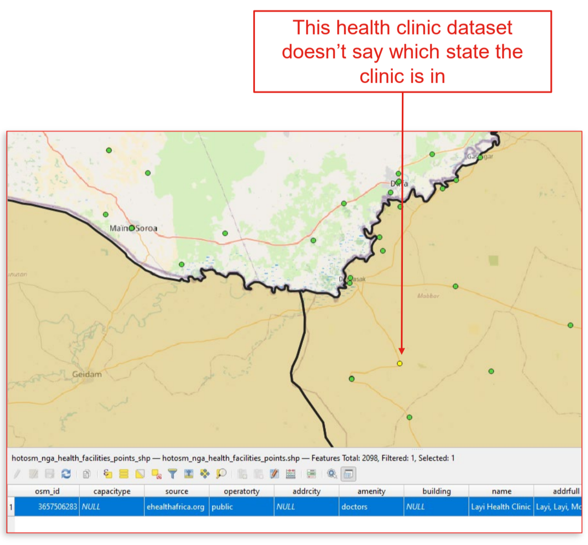
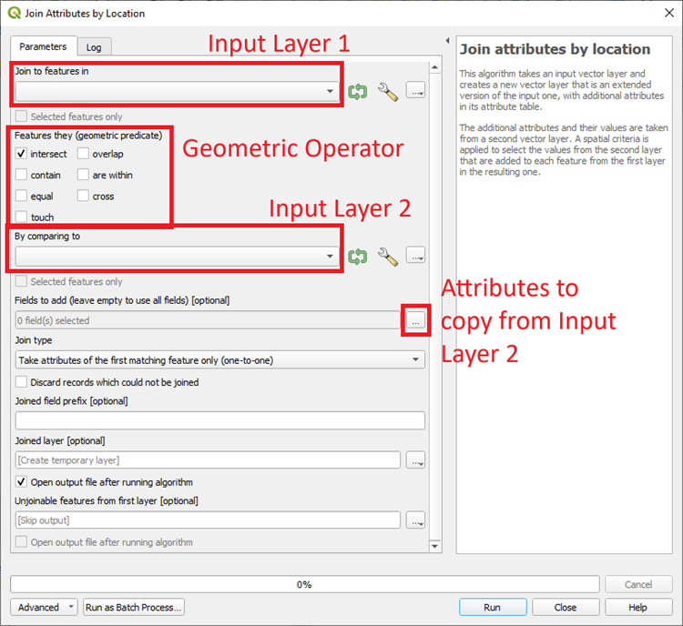
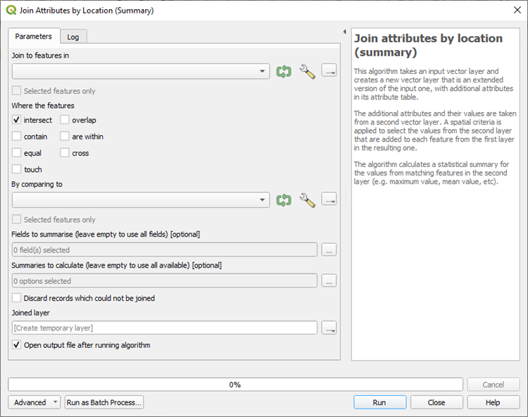
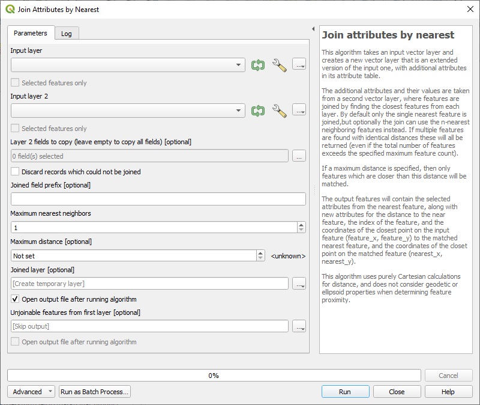

Spatial data processing#
Introduction#
Spatial processing uses spatial information to extract new meaning from GIS data. It does so by using the spatial relationship of different layers or features. Spatial relationships describe how things are located in relation to one another. In humanitarian work, this helps answer critical questions like “Which communities are near a water source?” or “Which areas are isolated from health services?”. Or, we might want to identify the best locations for distributing aid, assess flood risk areas, or plan evacuation routes.
We have already encountered spatial relationships in module 3 in the subchapter on geometrical operators— also called geometrical predicates in QGIS. The table below describes spatial relationships and gives examples when these spatial relationships are relevant in humanitarian aid.
Spatial Relationships#
Spatial Relationship |
Description |
Humanitarian Example |
|---|---|---|
Proximity |
How close one thing is to another |
Find the nearest shelters to a displaced community |
Containment |
Whether something is inside another area/polygon |
Identify which schools are within a specific conflict-affected zone |
Intersection |
Identify geometric features that overlap |
Look for areas where damaged infrastructure overlaps with vulnerable populations |
Adjacency |
Geometric features that share a point or a boundary |
Identify regions bordering a conflict zone that may be at risk of displacement |
Connectivity |
How things are connected through networks such as roads, rivers, or even trade routes |
Map the shortest path between villages and hospitals to plan emergency evacuations |
Direction |
Relative position, like north, south, east, west, or relative position to the flow of a river, for example |
Locate villages north of a river that are cut off due to flooding and inaccessibility of connecting bridges |
QGIS offers a variety of spatial processing tools that we can use to analyse and create new insights using these spatial relationships. For instance:
Spatial Joins let us join attribute values from one layer to another based on their spatial relationship. This enables us to enrich datasets and incorporate additional information from layers, which can help us understand a situation.
The overlay operation Clip can be employed to extract specific areas of interest from multiple layers, allowing us to focus our attention where it is most needed.
The Dissolve operation allows us to simplify geometries by joining geometries from two distinct layers.
Using Buffer, we can create zones around features to help identify vulnerable areas and plan evacuation routes in the event of a flooding event.
Centroids create points in the geometric centre of the geometries of a layer. This is especially useful when creating graduated symbol maps

Different spatial geoprocessing tools. Source: Adapted from Saylor Academy#
In this chapter, we will first explore spatial joins. Spatial joins, for example, allow us to import attributes from one layer to another on the basis of their location in relation to geofeatures in another layer. These Spatial relationships can also be used to select features of a layer. Furthermore, we will go over the spatial processing tools buffer, clip, and dissolve. These operations allow us to combine geometries from two layers in various ways (see Fig. 5.1).
Spatial joins#
Joins are ways to combine two different data layers. In general, there are two types of joins: non-spatial joins and spatial joins.
Non-spatial joins rely on specific attribute values, which are used as ID-fields, to combine two layers. These are covered in the chapter “Non-spatial processing tools” in this module.
Sometimes we want to combine information from different layers that don’t share a common value. In these cases, we can use spatial joins, which let us join data based on location rules.
Spatial joins in QGIS enhance the attributes of the input layer by adding additional information from the join layer, relying on their spatial relationship. This process enriches your data by incorporating relevant details from one layer into another based on their geographical associations.
In QGIS, a spatial join creates a new layer by comparing the features of one layer to another, depending on their spatial relationship.
The resulting joined layer receives attributes from both layers based on the chosen parameters.
For example:
Any point within a polygon should inherit attributes of the polygon.
Humanitarian Example:
A flood depth model is available, and the goal is to determine which buildings are flooded under this scenario. This can be achieved by performing a spatial join to add the flood depth to the polygon layer containing the houses.
The resulting map could look something like this:

A building footprint layer combined with a flood extent layer. By joining them, we can assess which houses are at risk to be damaged by flooding (Source: IFRC).#
Geometrical operators#
Spatial joins rely on the geometrical operators. In the tabs below, you can find the different geometrical operators available in QGIS and how they affect the data processing.
Tests whether the geometry of the two layers intersects with one another. The algorithm returns the value “True” (1), if the geometries intersect spatially. This means that they share any portion of space, overlap, or touch. If they don’t overlap, the algorithms returns the value “False” (0). In the picture below, the algorithm return the circles 1, 2, and 3.
Disjoint features do not share any portion of space. This means that they don’t touch or overlap. In the picture below, the algorithm would output a layer with only the circle 4.
The algorithm returns a layer with geometries that are exactly the same (all the points and lines are equal). In the picture below, no circles are returned (added to the output layer).
Tests whether a geometry touches another. The algorithm outputs a new layer with the geometries that have at least one point in common, but their interiors do not intersect. In the image below, only circle 3 is returned.
Tests whether geometries overlap. Returns geometries if they share space, are of the same dimension, but are not completely contained by each other. In the image below, only circle 2 is returned.
Tests whether one geometry is within another. Returns geometries a if they are completely inside of geometry b. Only circle 1 is returned.
Returns geometries if and only if no points of b lie in the exterior of a, and at least one point of the interior of b lies in the interior of a. In the picture, no circle is returned, but the rectangle would be if you would look for it the other way around, as it contains circle 1 completely. This is the opposite of “are within”.
Returns geometries that have some, but not all, interior points in common and the actual crossing is of a lower dimension than the highest supplied geometry. For example, a line crossing a polygon will cross as a line (true). Two lines crossing will cross as a point (true). Two polygons cross as a polygon (false). In the picture below, no circles will be returned.

Looking for spatial relations between layers
(Source: QGIS Documentation, Version 3.28)#
Exercise: Performing a spatial join#
Now it’s your turn!
Practical exercise is crucial to understand how GIS, and QGIS, works. You can follow along by downloading the necessary data.
In the example above (Fig. 5.4), we have a dataset containing the healthsites by healthsite.ioand a dataset with the administrative boundaries (adm2) of Nigeria. We want to know in which state each healthsite is located. To do this, we need to use the tool “Join Attributes by Location”.
{kind=link}

An example of a situation where you will use a spatial join (Source: BRC)#
Tool: Join attributes by location
This tool takes two input layers and creates a new vector layer which has the attributes of both layers in its attribute table.
The first input layer (see “Join to features in” in Fig. 5.5) dictates which geometric features will be copied to the new layer.
The second input layer (see “By comparing to” in Fig. 5.5) dictates the attributes that will be added to the new layer on top of the attributes of the first input layer. You can select which of these attributes should be transferred to the new layer.
{kind=link}

The “Join Attributes by Location”-tool in QGIS 3.36.#
Download the necessary datasets from HDX
Unzip the files, create a new QGIS-project, and load the files into the QGIS-project.
Search for the tool “Join Attributes by Location” in the processing toolbox and Double-Click on it. A new window will open (see
join_by_location_ex1).Use the health facilities layer as the target (“Join to feature in”) and the adm2 layer as the comparison layer (“By comparing to”).
Use the
are withinas geometrical predicate.Select the fields to add:
ADM2_EN,ADM2_PCODESelect
Discard records that could not be joinedClick
Runto proceed; the log should confirm success.A new (temporary) layer called “Joined features” will appear in your layers-panel
Right-click on the layer and select “Export” or “Make Permanent” to save the new layer.
Congratulations, we now have added the information about the administrative region to the health facilities layer! We can symbolise the joined layer with the categorised symbology to verify if it worked (see Fig. 5.6). Note that the points in the original dataset which were outside of Nigeria’s border have been discarded as they could not be joined.

The different colours for the points indicate that they are located in a different state (adm2).#
More spatial join-tools in QGIS#
By default, QGIS provides three different tools to perform spatial joins.
The first, and the most common one, is the tool “Join attributes by location” which we used in the previous exercise.
There are also the tools “Join attributes by location (summary)” and “Join attributes by nearest”.
This tool is similar to the “Join Attributes by Location”-tool. However, on top of adding the attributes from one layer to another, this algorithm also calculates statistical summaries for the values from matching features in the second layer. These summaries include a wide range of options, such as minimum and maximum values, mean values, as well as counts, sums, standard deviation, and more.
{kind=link}

Screenshot of the tool Join attributes by location (summary) in QGIS 3.36#
This type of spatial join is similar to the other two joins but the joining of features occurs by identifying the closest features from each of these layers. Furthermore, if a maximum distance is specified, only the features that are within this designated distance will be considered as suitable matches for the joining process.
{kind=link}

Screenshot of the tool Join attributes by nearest in QGIS 3.36#
Note
A detailed description of the functions and settings of these tools can be found in the QGIS documentation
Exercise: Calculate sum of affected population and flooded area for the Area of interest#
In the aftermath of flooding events, data on the affected population and the extent of flooding is crucial. This information can be refined from a nationwide dataset to provide specific numbers for individual districts or states. This can aid in identifying the areas most heavily impacted, leading to more efficient relief operations. In the upcoming exercise, we will calculate the total flooding extent in square kilometers and the affected population for Unity State, South Sudan. To accomplish this, we will utilize the Join attributes by location (summary) tool.
Load the necessary data for this exercise into your QGIS. Both datasets were downloaded from HDX:
South Sudan - Subnational Administrative Boundaries:
State_Unity_South_Sudan.shpSatellite detected water extents between 11 and 15 August 2023 over South Sudan: Download the folder FL20220424SSD_SHP.zip, unzip it, and search for the file VIIRS_20230811_20230815_MaximumFloodWaterExtent_SouthSudan.shp.
Locate the tool named Join attribute by location (summary).
Choose state boundaries as the target layer for joining features.
Set intersect as the spatial relationship.
Select flood extent layer as the comparison layer.
Specify the fields to be summarized as Area_km2 and Pop.
Choose sum as the type of summaries to be calculated.
Click Run to start the process.
Once completed, you will have access to information on the total affected population and flooded areas for the entire state of Unity.
Solution: Calculate sum of affected population and flooded area for the Area of interest
Self-Assessment Questions#
Test your knowledge
What differentiates a spatial processing tool from a non-spatial processing tool?
Answer
A spatial processing tool operates on the geometry (location, shape, spatial relationship) of features (points, lines, polygons, or raster cells) and uses that spatial information (e.g., distance, adjacency, overlap) in its operation. A non‑spatial processing tool operates only on attribute or tabular data without regard to the geometry (for example sorting a table, calculating a field, joining tables by key).
Name and briefly describe at least three common spatial tools or operations covered (e.g. buffer, clip, dissolve, intersect, union).
Answer
Buffer: Creates a zone at a specified distance around input features (points, lines or polygons). For example, around a road line you create a 100 m buffer zone polygon that represents all area within 100 m of the road.
Clip: Uses one layer (the “clip” layer) to trim or cut another layer so that only the portion of the input layer falling inside (or maybe outside) the clip layer remains. Effectively extracts a subset of geometry.
Dissolve: Merges adjacent or overlapping features in a layer based on a shared attribute (or simply removes internal boundaries) so that features become larger aggregated shapes. For instance, combining many small administrative units into one larger one based on a region code.
If you have a layer of roads and you apply a buffer of 100 m around each road, what is the resulting geometry and what is one possible use case
Answer
The output will be polygon features (zones) that represent all areas within 100 m of each road. So if your input roads are line features, after the buffer you will have polygon(s) that “wrap” around each road line, extending on both sides by 100 m (assuming a simple planar buffer).
A buffer could be used to buffer a cyclone track to approximate the cyclone-affected region (see QGIS Trigger Workflow for Madagascar).
Why is it important to check whether input layers have compatible projections / CRSs before running spatial tools?
Answer
If layers have different CRSs (or datums) and you apply a spatial tool without performing a proper reprojection, the geometry calculations (distances, areas, buffers, overlay) may be incorrect or misleading. For example a buffer of “100 m” may in fact be 100 units of a different coordinate system (degrees or feet) so the real world distance is wrong.
Spatial operations rely on accurate geometric relationships; if one layer is in e.g., WGS84 geographic degrees and another is in a projected metre‐based CRS, the mismatch can cause mis‐alignment, stretching, distortion, or errors in results.
Ensuring compatible projections helps maintain spatial accuracy, area/distance correctness, and valid topological relationships (e.g., overlays, intersections) which are critical for meaningful results.